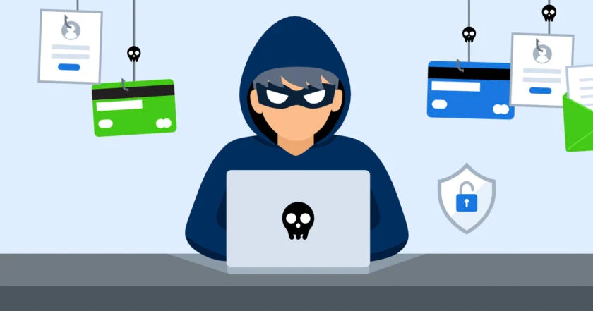

Види шахрайств

Шахрайство - це діяльність, спрямована на отримання незаконних вигод шляхом обману людей. В Інтернеті існує безліч видів шахрайства, які можуть призвести до втрати грошей, особистих даних та інших ресурсів. Нижче ми розглянемо найбільш поширені види шахрайства в Інтернеті.
1. Фішинг
Фішинг - це вид шахрайства, при якому зловмисник намагається отримати доступ до особистих даних користувача, таких як логіни, паролі, номери кредитних карток тощо. Зазвичай фішери використовують електронну пошту або підроблені веб-сайти, щоб надати собі вигляд легітимної організації або компанії.
2. Спам
Спам - це надсилання небажаних електронних повідомлень, які містять рекламу, шахрайські пропозиції або віруси. Спам може надходити на електронну пошту, месенджери, соціальні мережі та інші канали зв'язку.
3. Розсилання листів з вимогою викупу
Розсилання листів з вимогою викупу - це вид шахрайства, при якому зловмисник надсилає електронний лист, у якому він вимагає від користувача виплатити грошову суму за те, що він має доступ до особистих даних або файлів користувача. Зазвичай такі листи містять погрози, що якщо користувач не виплатить гроші, то його дані будуть опубліковані або втрачені.
4. Фейкові веб-сайти
Фейкові веб-сайти - це сторінки, які підроблюють вигляд офіційних веб-сайтів компаній або організацій. Зловмисники використовують такі сторінки для отримання доступу до особистих даних користувачів або для вимагання грошей.
5. Комп'ютерні віруси
Комп'ютерні віруси - це програми, які можуть пошкодити комп'ютер або зламати його безпеку. Віруси можуть бути розповсюджені через електронну пошту, підроблені веб-сайти, файлообмінники та інші канали зв'язку.
6. Соціальний інжиніринг
Соціальний інжиніринг - це метод шахрайства, при якому зловмисник намагається отримати доступ до особистих даних користувача, використовуючи соціальну маніпуляцію. Наприклад, зловмисник може надати себе за представника компанії або організації та запитати у користувача його логіни та паролі.
7. Психологічне шахрайство
Психологічне шахрайство - це метод, при якому зловмисник використовує психологічний тиск або маніпуляцію, щоб отримати доступ до особистих даних або грошей. Наприклад, зловмисник може надати себе за близьку людину або представника організації та запитати у користувача гроші або особисті дані.
8. Клікбейти
Клікбейти - це метод залучення користувачів до певного контенту за допомогою заголовків, які надзвичайно приваблюють увагу. Зазвичай такий контент не має ніякої цінності або не відповідає обіцянці заголовку.
9. Онлайн-шахрайство з використанням криптовалют
Зловмисники можуть використовувати криптовалюти для шахрайства в Інтернеті. Наприклад, вони можуть надсилати фішингові електронні листи з проханням перерахувати гроші на певний криптовалютний гаманець.
10. Спам-боти
Спам-боти - це програми, які автоматично надсилають небажані повідомлення на електронну пошту, соціальні мережі або інші канали зв'язку. Зловмисники можуть використовувати спам-ботів для розсилання фішингових електронних листів або реклами.
11. Розсилання небажаних повідомлень
Розсилання небажаних повідомлень - це вид шахрайства, при якому зловмисник надсилає небажані повідомлення з рекламою або шахрайськими пропозиціями. Це може бути SMS-повідомлення, електронні листи, сповіщення в месенджерах та інші канали зв'язку.
12. Інтернет-шахрайство з використанням соціальних мереж
Зловмисники можуть використовувати соціальні мережі для шахрайства, наприклад, створювати підроблені профілі, щоб отримати доступ до особистих даних користувачів або вимагати гроші.
Ці види шахрайства дуже поширені в Інтернеті, тому важливо бути обережним та дотримуватися правил безпеки в Інтернеті, щоб захистити свої особисті дані та уникнути кіберзагроз